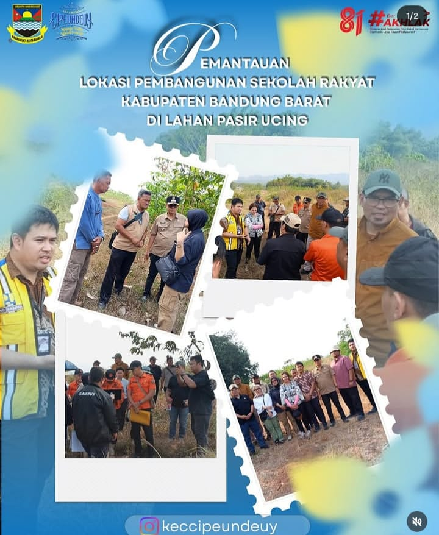

kegiatan pemantauan lokasi rencana pembangunan Sekolah Rakyat
Camat Cipeundeuy menghadiri kegiatan pemantauan lokasi rencana pembangunan Sekolah Rakyat Kabupaten Bandung Barat yang berlokasi di Lahan Pasir Ucing, Kecamatan Cipeundeuy. Kegiatan ini dilaksanakan sebagai bagian dari upaya memastikan kesiapan lokasi serta mendukung proses pembangunan fasilitas pendidikan yang diharapkan dapat memberikan manfaat bagi masyarakat, khususnya dalam meningkatkan akses dan kualitas pendidikan bagi generasi penerus. Dalam kegiatan tersebut dilakukan peninjauan langsung terhadap kondisi dan kesiapan lahan, sekaligus koordinasi bersama unsur terkait untuk memastikan setiap tahapan persiapan pembangunan dapat berjalan dengan baik, tertib, dan sesuai dengan ketentuan yang berlaku. Pemerintah Kecamatan Cipeundeuy menyampaikan dukungan terhadap rencana pembangunan Sekolah Rakyat sebagai salah satu bentuk komitmen bersama dalam mewujudkan pemerataan akses pendidikan serta meningkatkan kualitas sumber daya manusia di Kabupaten Bandung Barat. Semoga proses pembangunan dapat berjalan lancar dan nantinya memberikan manfaat yang luas bagi masyarakat.